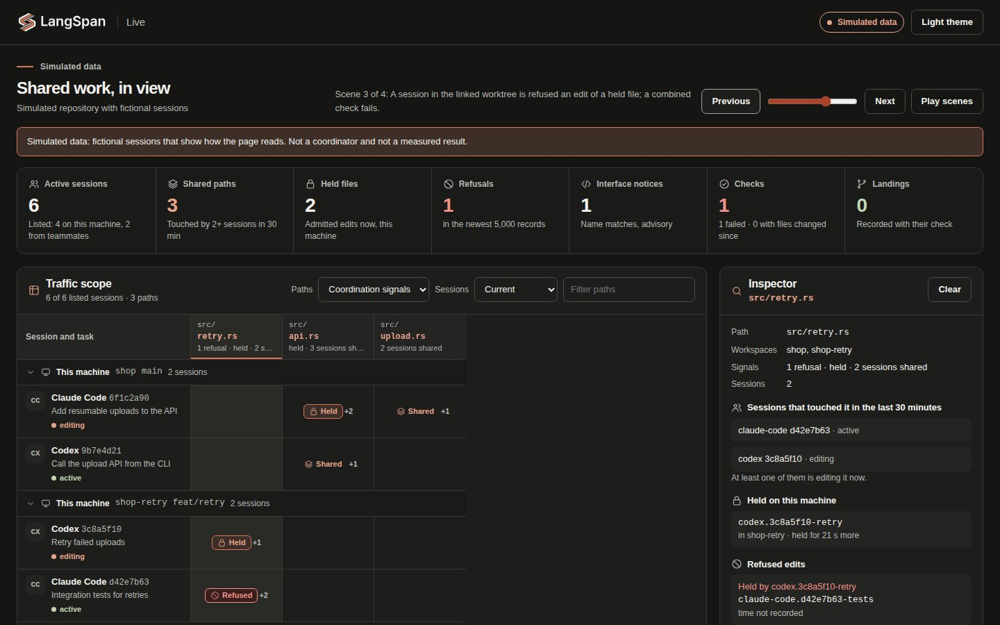
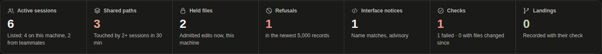
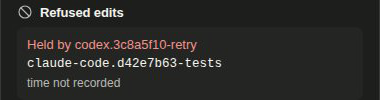

A briefing at each prompt.
The files and functions other sessions are editing, including uncommitted work in linked worktrees.
editing now: "src/gate.rs"RecordedOpen-source coordination for coding agents
For developers who run two or more coding agents in one repository. LangSpan tells each agent what the others are editing, and refuses edits that overlap.
Works with Claude Code, Codex, Cursor and Antigravity. See what’s verified for each
src/gate.rs · name()
HoldHold released
src/gate.rs · name()
tests/gate.test.rs
RefusedDifferent work
editing now: "src/gate.rs"
Command blocked by PreToolUse hook: LangSpan coordination conflict.
Codex picks a different file.
The problem
One agent changes priceWithTax(amount) to take a rate. Another agent still calls it with one argument. Git merges both files without a conflict, and the combined tests fail.
− priceWithTax(amount) + priceWithTax(amount, rate)
priceWithTax(100)
priceWithTax now takes 2 arguments. This call supplies 1.
Inspect billing.ts before continuing.
Illustrative, name-based notices. Signature change in a shared checkout.
What each agent gets
The files and functions other sessions are editing, including uncommitted work in linked worktrees.
editing now: "src/gate.rs"RecordedIf another session holds the function, the edit stops. The agent can retry later or choose other work.
Command blocked by PreToolUse hook: LangSpan coordination conflict.RecordedRenamed, removed or re-signed functions in Rust, Python, TypeScript, JavaScript, Go, Java and C#. Notices match names and are advisory.
priceWithTax now takes 2 arguments. This call supplies 1.IllustrationGet LangSpan
Download the binary, run langspan setup, then open your agents as usual in a Git repository.
v0.2.0 · macOS and Linux · All release assets
Verify and extract the archive. SHA256SUMS · Release notes · Installation guide
Close Claude Code, then run from the extracted folder.
mkdir -p "$HOME/.local/bin" install -m 0755 langspan "$HOME/.local/bin/langspan" export PATH="$HOME/.local/bin:$PATH" langspan setup
Review the setup plan and confirm. In Codex, trust the hooks with /hooks. Already installed? Run langspan setup.
Open your agents as usual in a Git repository. To see their sessions, open LangSpan Live.
langspan dashboard --openEach release publishes a SHA256SUMS file. Compare your archive’s checksum with it before you extract. The installation guide has the commands for macOS and Linux, and the source build.
langspan setup changesSetup connects the hosts it detects, starts the local coordinator and installs a login service where supported. It shows the plan and waits for you to confirm. See set up in one command in the usage guide.
LangSpan Live
After setup, LangSpan Live shows sessions, held files, refusals and notices. It’s a read-only dashboard on your machine.
Open the demo dashboard


langspan dashboard --demo).Evidence
Local by default. The coordinator, hooks and database run on your machine, with no account. Sharing across machines is opt-in and never sends source contents.
Claude Code and Codex coordination is recorded on real sessions. Cursor support is built from its documentation and not yet run on a real host. Antigravity was corrected after one real run; a repeat run is pending. Coordination covers edits that go through the hooks. The coordination benchmark has no published result yet.
| Host | Evidence |
|---|---|
| Claude Code | Recorded on real sessions |
| Codex | Recorded on real sessions |
| Cursor | Built from its documentation; not yet run on a real host |
| Antigravity | Corrected after one real run; a repeat run is pending |
| Benchmark | No published result yet |
Questions
The answers a careful reader looks for before installing a tool that sits between agents and their edits.
No. The coordinator, hooks, CLI, MCP server and database run locally, and there’s no LangSpan account. Sharing across machines is off until you turn it on. It publishes Git metadata, never source contents. Your coding agents’ own providers handle data under their own terms.
Yes, in some cases. Holds are scoped and temporary, and they cover edits that go through the hooks. Writes outside the hooks, and edits the host approves late, can bypass them. Your host’s permissions stay in charge.
It can reread the file, retry later or choose other work. Waiting on a hold is an opt-in workspace policy, off by default, and a wait lasts at most part of one hook call.
No. LangSpan works alongside your agents, Git, branches, worktrees and review. It doesn’t assign tasks or run agents. You choose priorities and review the result.
Rust, Python, TypeScript, JavaScript, Go, Java and C#. Notices match names, not resolved types or imports, so they’re advisory.
Not yet. The goal is parallel work with less avoidable repair, and the coordination benchmark has no published result. The benchmark method is public.
Go deeper
Step through each capability with its proof label.
Checkouts, linked worktrees and opt-in Git metadata.
Why parallel agents need it. It motivates the problem; it doesn’t measure LangSpan.
Commands, hosts and the live dashboard.